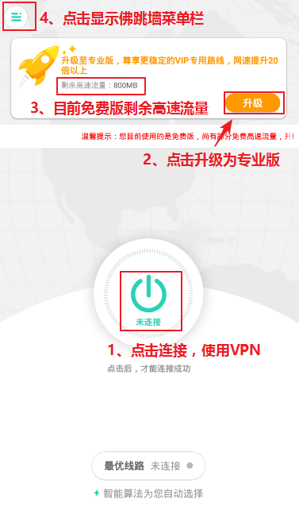
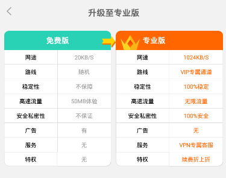
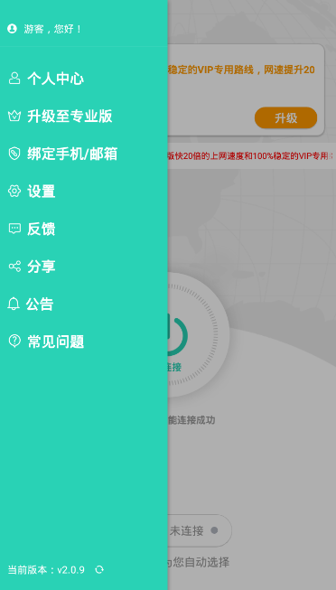
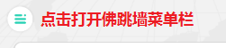

| 佛跳墙手机版使用教程 |
您好，欢迎使用《佛跳墙》软件，如果您是第一次翻墙，请您花30秒钟浏览此文档，助您快速了解佛跳墙的使用方法。 |
| 一、打开佛跳墙后，可以看到如下图所示的佛跳墙主界面，界面中的1234处，在下方说明 |
|  |
|
1、打开佛跳墙后，点击中间的《未连接》按钮，即可变为《已连接》状态，就代表连接成功，这个时候就可以直接去访问您想访问的任何网站 2、用户点击《升级》按钮可弹出套餐页面，选择购买套餐可以升级为佛跳墙专业版 3、新用户初次使用佛跳墙，都可获得50MB免费高速流量《如上图左上角位置》，在高速流量状态下，您的平均速度为1MB/秒；当高速流量用完后，就会进入低速线路，平均速度只有10KB/秒，如果您想继续使用高速流量，可以选择升级专业版或参与活动来获得高速流量。 4、点击左上角菜单导航栏，可以查看佛跳墙公告，当前版本，分享软件、检查更新、代理设置以及个人中心。 |
| 二、关于佛跳墙免费版和专业版，以及免费高速流量介绍（如下图所示） |
|
说明： 1、初始登入佛跳墙的用户，使用的都是免费版佛跳墙，免费版可以一直使用； 2、免费版用户有50MB的免费高速流量可以体验，在使用高速流量的状态下连接速度是1MB/秒（如上图所示正在使用50MB高速流量）； 3、当高速流量用完后，就会回到免费版低速线路，速度只有10KB/秒（在这个速度下，网速会非常缓慢，很容易掉线）； 4、当高速流量用完后，为了保障良好的速度和体验，您可以点击升级为专业版，专业版拥有无限的高速流量，平均翻墙速度为1MB/秒，100%的稳定，线路可智能切换。（如下图） |
|  |
| 三、佛跳墙菜单栏（如下图所示） |
|  |
|
1、点击佛跳墙客户端主界面左上角图标可以打开佛跳墙菜单栏  2、个人中心可以注册绑定账户，绑定账户后可登录不同的设备 3、 点击《反馈》可以联系佛跳墙在线客服，客服早上9点-晚上19点在线，其他时间也可以点击《反馈》给佛跳墙留言，我们将积极处理您的问题或建议 4、点击《分享》可以分享下载二维码和网址给好友使用，如果您忘记了下载佛跳墙的地址，可以在这里找到佛跳墙的永久下载地址（如下图所示） |
|
5、如果使用过程中出现问题，除了咨询客服外，也可以点击《常见问题》来自助解决。 |
|
佛跳墙VPN介绍完毕 感谢您的浏览，赶紧去使用吧，祝您翻墙愉快 |